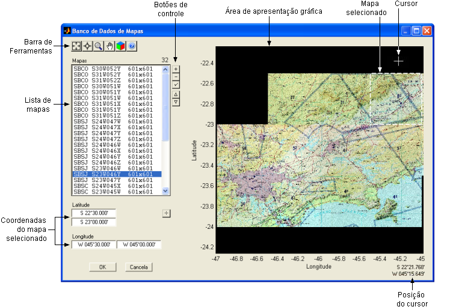
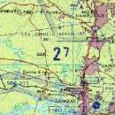
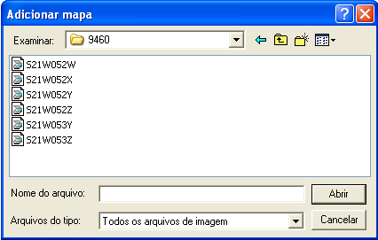
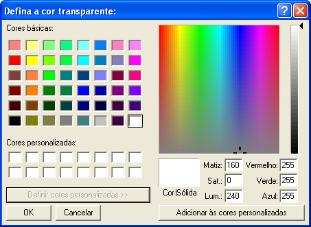
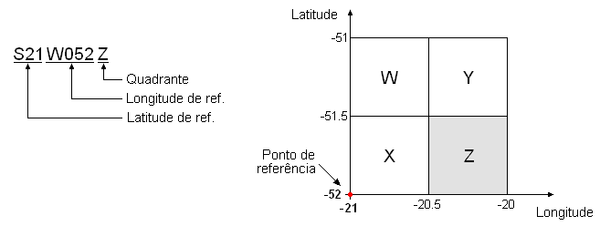
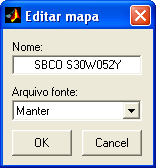

| Menu
Ferramentas - Reprodução do
Voo - Editor de Cenários |
|
Essa ferramenta
permite manipular
o banco de dados de mapas usados na composição dos cenários táticos
apresentados no TSD da ferramenta de reprodução do voo.
Para acessar o
Editor do Banco de Dados
de Mapas, clique no botão na Barra de Ferramentas do
Editor de Cenários.

Descrição
e Operação
A janela do Editor
do Banco de Dados de Mapas possui as seguintes áreas:
Barra
de
Ferramentas
A Barra de
Ferramentas possui botões que permitem o controle
da escala do gráfico.
Para ajustar o zoom da área de apresentação gráfica de forma a exibir todo o conteúdo, clique no botão .
Para ajustar o
zoom da área de
apresentação gráfica ao(s) mapa(s) selecionado(s), clique no
botão  .
.
Para habilitar
o zoom com o mouse,
clique no botão  .
Enquanto habilitado, é possível realizar as seguintes operações:
.
Enquanto habilitado, é possível realizar as seguintes operações:
- Defina um quadrado com o mouse na área de apresentação
gráfica para
ampliar a região demarcada;
- Clique com o botão esquerdo na área de apresentação
gráfica para
aproximar o zoom; e
- Clique com o botão direito na área de apresentação gráfica para afastar o zoom.
- Dê um duplo clique com o botão esquerdo para ajustar o zoom a todo o conteúdo.
Para
desabilitar o zoom com o
mouse, clique novamente no botão .
Para habilitar
o deslocamento da
área de apresentação gráfica com o mouse, clique no botão  .
Enquanto habilitado, é possível arrastar a área gráfica pressionando-se
o botão
esquerdo e movendo o mouse.
.
Enquanto habilitado, é possível arrastar a área gráfica pressionando-se
o botão
esquerdo e movendo o mouse.
Para
desabilitar o deslocamento
com o mouse, clique com o botão direito ou clique novamente no
botão .
Para habilitar
o renderizador de vídeo
OpenGL,
clique no botão  .
Essa opção permite a visualização correta de mapas com áreas transparentes.
.
Essa opção permite a visualização correta de mapas com áreas transparentes.
Área
de
Apresentação Gráfica
Essa área
apresenta uma visualização gráfica de todos os
mapas cadastrados no banco de dados.
A projeção
cartográfica é do tipo equi-arco,
com arcos proporcionais nos dois eixos.
A posição do
cursor do mouse (latitude e longitude) é
apresentada no canto inferior direito da janela quando o mesmo estiver
posicionado sobre a área de apresentação gráfica.
Os mapas selecionados na lista de mapas são destacados por quadrados brancos tracejados.
Para selecionar
um mapa a partir da área gráfica, clique sobre o mesmo.
Área
de
Controle do Banco de Dados
Essa área
apresenta a lista com todos os mapas cadastrados e
permite a manipulação do banco de dados de mapas.
A lista de
mapas apresenta o nome e a resolução (em pixels)
de cada mapa cadastrado.
As coordenadas
do mapa selecionado são apresentadas nos
campos “Latitude” e “Longitude” abaixo da lista (caso haja somente um
mapa
selecionado).
Os parâmetros
que definem cada mapa são:
|
Objeto |
Simbologia |
Parâmetro |
Descrição |
Formato/Unidade* |
|
Mapa |
 |
Nome |
Nome de
referência no banco de dados de mapas |
Texto |
|
Latitude 1 |
Latitude da
borda inferior do mapa |
X GG°MM.mmm’ |
||
|
Latitude 2 |
Latitude da
borda superior do mapa |
X GG°MM.mmm’ |
||
|
Longitude 1 |
Longitude da
borda esquerda do mapa |
X GGG°MM.mmm’ |
||
|
Longitude 2 |
Longitude da
borda direita do mapa |
X GGG°MM.mmm’ |
* Notações:
GG: graus com 2 algarismos.
GGG: graus com 3 algarismos.
MM: minutos com 2 algarismos.
mmm: milésimos
de
minuto com 3 algarismos.
X: caractere “N”
ou
“S” para latitude e “E” ou “W” para longitude.
As coordenadas
de todos os mapas devem estar no sistema
WGS-84 para correta apresentação no reprodutor do TSD.
Manipulação de
mapas
Para
acrescentar um mapa ao banco de dados, clique no botão ,
localize o arquivo com o mapa desejado e clique “Abrir”.

Os formatos de
arquivo de imagem suportados são:
|
Extensão |
Tipo do Arquivo |
|
.jpg,
.jpeg |
Joint Photographic Experts Group |
|
.tif,
.tiff |
Tagged Image File Format |
|
.gif |
Graphics Interchange Format |
|
.bmp |
Windows Bitmap |
|
.hdf |
Hierarchical Data Format |
|
.pbm |
Portable Bitmap |
|
.pcx |
Windows Paintbrush |
|
.pgm |
Portable Graymap |
|
.png |
Portable Network Graphics |
|
.ppm |
Portable Pixmap |
|
.ras |
Sun Raster |
|
.xwd |
X Windows Dump |
| Nota: Após
cadastrar um mapa, não é necessário manter o arquivo original no
computador. O banco de dados de mapas é armazenado pelo R_DAT de forma
independente. |

| Nota: A apresentação de mapas com transparência só funciona com renderizador OpenGL selecionado. |
Se o nome do
arquivo carregado possuir nomenclatura padrão ICA
(Instituto de Cartografia da Aeronáutica), o editor poderá interpretar
as
coordenadas automaticamente.
A nomenclatura
ICA é descrita e exemplificada abaixo:
- Número de
caracteres no nome do arquivo: 8;
- Caracteres
- Caracteres
- Caractere 8: quadrante (W, X, Y ou Z);
- Cada conjunto de
quatro quadrantes se estende por um grau de latitude ao norte e um grau
de
longitude a leste do ponto de referência;
- A extensão de cada
quadrante é de meio grau em latitude e longitude.
Exemplo:
arquivo "S21W052Z.tif"

Para definir ou
alterar manualmente as coordenadas do mapa
selecionado, insira os valores nos campos “Latitude” e “Longitude” abaixo da lista de
mapas, em qualquer formato de coordenadas reconhecido pelo R_DAT.
Para definir ou
alterar as coordenadas do mapa selecionado a
partir da área gráfica, clique no botão e
defina um retângulo com o
mouse diretamente
na posição desejada da área gráfica. Os campos “Latitude” e “Longitude”
serão
preenchidos automaticamente.
Para remover os
mapas selecionados, clique no botão e
confirme.
Para alterar o nome ou recarregar a imagem do mapa selecionado (incluindo definição de transparência), clique no botão .

Para reordenar
os mapas, use os botões e .
Os mapas são apresentados em camadas sobrepostas na ordem em que
aparecem na
lista de objetos. Só é possível mudar a posição de um mapa por vez.
Sair
Para fechar a
janela e salvar as
alterações no banco de dados de mapas, clique no botão “OK”. O Editor
de
Cenários recarregará os mapas do cenário atual.
Para fechar a
janela e descartar
as alterações, clique no botão “Cancela”.
|
Nota: As alterações feitas no banco de dados de mapas
terão efeito sobre todos os cenários táticos salvos anteriormente. |
| |
Editor
de cenários |